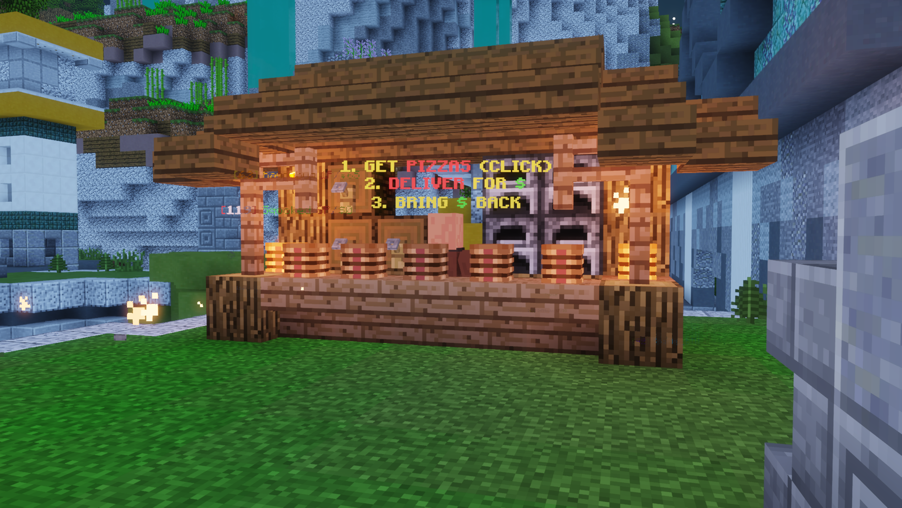

|  |
| The pizza stand, where players collect pizzas and deposit cash. |
Pizza is a major event in the Hypixel Pit. Like all major events, when it occurs, 3 minutes advance warning is given. Pizza lasts for 5 minutes.
When a Pizza event starts, a pizza stand opens at a random predetermined location on the map. By clicking the stand, players can claim up to six pizzas which must be given to villagers that spawn around the map to earn cash. Players can give pizzas to villagers by right-clicking them with a pizza in their hand. After receiving cash from a villager, it must be deposited at the pizza stand. When a player is killed, all of their pizzas are dropped and their non-deposited cash is given to the player who killed them.
Placement in the event is determined by how much cash the player deposited by the end of the event.
During Pizza, the following gameplay changes take effect:
Additional rewards that players can earn during Pizza: